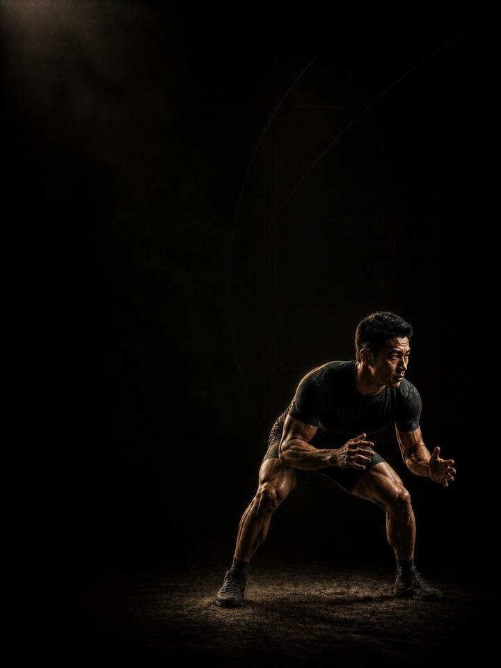

المصارعة والجوجيتسو · المنافسة
يومان قصيران في النادي أسبوعيًا يحافظان على قوتك طوال المعسكر، ثم تخفيف حقيقي قبل المنافسة لتصل مرتاحًا.
- مناسب لـلاعبي الجوجيتسو البرازيلي والمصارعة والفنون القتالية المختلطة في معسكر المنافسة
- أيام التدريبيومان في النادي أسبوعيًا، ويوم قصير واحد في أسبوع النزال
- مدة الجلسة48–60 دقيقة
- المعداتنادٍ متكامل، مع بار عقلة وزلّاجة ومنشفة
- الصيغةملف PDF للهاتف، وكل تمرين مرتبط بفيديو توضيحي
المتجر يفتح قريبًا. حاليًا ينسخ زر الشراء رسالة قصيرة ويفتح إنستغرام: الصقها وتستلم الملف هناك.
لمن هذا البرنامج
للاعبي المصارعة والجوجيتسو المقبلين على معسكر منافسة. معظم المتنافسين يخسرون النزال في المعسكر، لا على البساط. يرتفع حجم التدريب على البساط، ويختفي وقت النادي، ويسوء النوم، فيصل الرياضي إلى مكان المنافسة في أسوأ حالاته طوال العام، ثم يلوم فترة التخفيف.
هذه الكتلة تفعل العكس. جلستان قصيرتان في النادي أسبوعيًا تحميان ما أنتجته كتلتا الأساس والبناء، مرتّبتان بحيث لا تنافسان أبدًا العمل الشاق على البساط. ثم يأتي تخفيف حقيقي يزيل التعب، بينما تبقى الأوزان ثقيلة بما يكفي لتبقى قويًا. لا شيء جديد يدخل. والأسابيع الأربعة الأخيرة هدفها أن تكون مرتاحًا، لا أن تثبت شيئًا في صالة الأثقال.
موقعه في السنة: الكتلة 3 من 4. الأساس، ثم البناء، ثم المنافسة، ثم الاستشفاء، بالترتيب. نفّذه طوال معسكر المنافسة. وإذا كان المعسكر أقصر من اثني عشر أسبوعًا، فابدأ من المرحلة التي تناسب الوقت المتبقي لك.
أسبوعك
يومان في النادي، في أيام البساط الأخف، ولا يكونان أبدًا خلال أربع ساعات من نزال تدريبي شاق. إذا تنافست جلسة النادي وجولة شاقة على الطاقة نفسها، فالجولة هي التي تفوز.
أسبوع المعسكر، يومان في النادي
| الأحد | الاثنين | الثلاثاء | الأربعاء | الخميس | الجمعة | السبت |
|---|---|---|---|---|---|---|
| اليوم 1 | البساط | اليوم 2 | البساط | البساط | راحة | البساط |
أسبوع النزال، يوم قصير واحد
| الأحد | الاثنين | الثلاثاء | الأربعاء | الخميس | الجمعة | السبت |
|---|---|---|---|---|---|---|
| اليوم 1 | البساط | راحة | البساط، خفيف | راحة | الوزن الرسمي | المنافسة |
لا يوجد يوم 3 في المعسكر. في أسبوع النزال، نفّذ اليوم 1 فقط، بنصف المجموعات، في بداية الأسبوع. ولا شيء ثقيل خلال 72 ساعة قبل المنافسة.
كل جلسة تسير بالطريقة نفسها:
- الإحماء، 8–10 دقائق. التسلسل نفسه في كل مرة. تنشيط الأرداف والوركين والكتفين قبل أي حركة سريعة.
- السرعة والقدرة الانفجارية، 12–15 دقيقة. ضرب الكرة الطبية والرمي الدوراني وأرجحة الكيتل بل الثقيلة، مع تعافٍ كامل، وتتوقّف لحظة تراجع الجودة.
- القوة، 20–25 دقيقة. الرفعات المركّبة الثقيلة، ثلاث مجموعات فعلية لكل منها، مع دقيقتين إلى ثلاث دقائق بين المجموعات.
- تمارين الأنسجة، 8–10 دقائق. في النهاية، ولا تُحذف أبدًا.
كيف تتقدّم الأسابيع الـ12
ثلاث مراحل، مدة كل منها أربعة أسابيع. القوة والقدرة الانفجارية تُفقدان بسرعة، والمعسكر الشاق يسرّع ذلك. وجلستان ثقيلتان قصيرتان في الأسبوع تكفيان للحفاظ على كل شيء تقريبًا. لا تكفيان للتقدّم، ولا بأس بذلك. الهدف أن تصل بما بنيته أصلًا. تبقى الأوزان ثقيلة، وتثبت المجموعات الفعلية عند ثلاث لكل رفعة، وتستمر تمارين القبضة والرقبة كل أسبوع حتى أسبوع النزال.
| الأسابيع 1–4 | الأسابيع 5–8 | الأسابيع 9–12 | |
|---|---|---|---|
| المرحلة | الحفاظ على القوة | الدافع العصبي | السرعة والانتعاش |
| الهدف | الحفاظ على القوة القصوى خلال معسكر شاق. ثلاث مجموعات ثقيلة لكل رفعة، ثم تنتهي. | أثقل أوزان المعسكر، ثلاث مجموعات حادّة لكل رفعة | التخلّص من التعب المتراكم قبل المنافسة. ينخفض الجهد، وتبقى الأوزان محترمة. |
| المجموعات الفعلية أسبوعيًا | 36 | 38 | 34 |
| متوسط الجهد | جهد 7.3/10، نحو 3 تكرارات في الخزان | جهد 7.9/10، نحو تكرارين في الخزان | جهد 6.5/10، نحو 3 إلى 4 تكرارات في الخزان |
| مرات الهبوط أسبوعيًا | 40 | 40 | 40 |
| الرميات أسبوعيًا | 12 | 0 | 9 |
المرحلة في لمحة
المجموعات التدريبية أسبوعيًا حسب ما تدرّبه. الخط المتقطع هو مستوى الجهد.
موقع هذه المرحلة في السنة التدريبية
نفّذ المراحل الأربع بالترتيب لتكتمل سنة تدريبية كاملة.
الجهد (RPE) تقييم من 1 إلى 10 لمدى صعوبة المجموعة. والتكرارات المتبقية في الخزان هي عدد التكرارات الجيدة الإضافية التي كنت تستطيع أداءها، فـ«نحو 2» تعني أنه يتبقى في الخزان تكراران.
التخفيف وما قبل المنافسة: الأسبوع 6 أسبوع تخفيف عادي، ويمكنك أخذه مبكرًا إذا ارتفع حمل المعسكر فجأة. والأسابيع 9–12 تخفّض الجهد والتعب خطوة بخطوة حتى المنافسة، والأسبوع الأخير يكاد يكون بلا شيء.
القواعد التي تجعله ينجح
- ثلاث مجموعات ثقيلة لكل رفعة جلسة كاملة. الحفاظ على القوة يحتاج إلى الحمل أكثر من الحجم. وأكثر من ساعة بكثير في النادي خلال المعسكر يأخذ طاقة يحتاجها البساط.
- لا ترفع أوزانًا ثقيلة أبدًا خلال أربع ساعات من نزال تدريبي شاق، ولا شيء ثقيل إطلاقًا خلال 72 ساعة قبل المنافسة. الجلسة التي تكلّفك جولة قد فشلت بالفعل.
- رقم القفزة أهم من الخطة. إذا كانت قفزتك العمودية بحركة مضادة أقل من متوسطك بأكثر من 10%، فخفّف ذلك اليوم، مهما قالت الصفحة. تعب المعسكر يتراكم أسرع مما يصدّق أي أحد.
- لا جديد بعد الأسبوع 4. لا تمارين جديدة، ولا أرقام قصوى جديدة، ولا تجارب في الأسابيع الثمانية الأخيرة. الجديد يسبّب ألمًا عضليًا، والألم العضلي في المعسكر يكلّفك وقتًا على البساط.
- التخفيف قبل المنافسة يجب أن يبدو كأنه تدريب أقل من اللازم. أن تشعر بالتوثّب وبأنك لم تتمرّن بما يكفي في الأسبوع الأخير هو النتيجة المقصودة.
- احسب مرات الهبوط، لا المجموعات فقط. كل قفزة وحجلة ووثبة وهبوط من ارتفاع هو هبوط تدفع أوتارك ثمنه، بما في ذلك حجلات الإحماء. أبقِ الأسبوع تحت نحو 100 مرة هبوط خلال الموسم، وتدريب رياضتك يُحسب فوق ذلك.
المصطلحات
- السنة التدريبية (الدورة الكبرى): أربع كتل بالترتيب (الأساس، والبناء، والمنافسة، والاستشفاء)، نحو 48 أسبوعًا.
- الكتلة التدريبية: 12 أسبوعًا. هذا البرنامج. تطوّر الكتلة الواحدة مجموعة واحدة من الصفات إلى مستوى محدّد.
- المرحلة (الدورة المتوسطة): 4 أسابيع. تستهدف كل منها صفة واحدة. وأربعة أسابيع اختيار لا قاعدة، فالمدة تتبع الهدف.
- الأسبوع التدريبي (الدورة الصغرى): حيث يرتفع الجهد، وتُضاف المجموعات، ويقع أسبوع التخفيف.
كيف تقيس تقدّمك
رقم القفزة الأسبوعي هو المقياس الرئيسي. وفي المعسكر، الخط المستوي نتيجة جيدة.
شكل التقدّم الجيد
- الأسابيع 1–4: يبدو النادي سهلًا أكثر من اللازم تقريبًا بينما يزداد البساط صعوبة. وهذا التوازن مقصود.
- الأسابيع 5–8: تصمد القوة ويبقى رقم القفزة مستويًا، وهذا في المعسكر فوز.
- الأسابيع 9–12: ينخفض الجهد، وتبدأ بالشعور بالخفّة والحيوية بدلًا من الثقل.
الهدف أن تصل مرتاحًا، لا أن تصل مُختبَرًا. إذا كانت أرقامك ترتفع في الشهر الأخير، فالمعسكر سهل أكثر من اللازم، أو النادي شاق أكثر من اللازم.
احترم الأسبوع
احسب كل شيء: المباريات، وتدريب رياضتك، والنادي، والنوم. القفزات المفاجئة في حمل التدريب الأسبوعي هي أكثر ما يتنبّأ بالإصابة في الرياضة غير الاحترافية. في أسبوع رياضي ثقيل، احذف جلسة نادٍ أو اختصر تمارين القدرة الانفجارية، ولا تحذف الرياضة والتعافي معًا أبدًا. احمِ 7–9 ساعات من النوم. إنه أقوى أداة أداء لديك، وأرخصها.
الأدلة العلمية
كل برنامج في المكتبة مبني على أبحاث منشورة، وقوة تلك الأبحاث مذكورة صراحةً لا ضمنًا. وحيث تكون الأدلة محدودة، تقول الصفحة ذلك.
| النتيجة | المصدر | ما لا تُظهره |
|---|---|---|
| تدريب القوة يخفض الإصابات الرياضية إلى أقل من ثلث معدلها في المجموعة الضابطة. أما الإطالة فلا تخفضها. | Lauersen, Bertelsen & Andersen, British Journal of Sports Medicine 2014. Meta-analysis of 25 randomised controlled trials, 26,610 participants. PMID 24100287 | نسبة الخطر 0.32 لتدريب القوة و0.96 للإطالة. تفاوتت التجارب كثيرًا، ولم تكن الجرعة موحّدة. |
| البرامج التي تتضمّن تمرين نورديك للعضلات الخلفية للفخذ تخفض إصابات العضلات الخلفية للفخذ إلى النصف تقريبًا. | van Dyk, Behan & Whiteley, British Journal of Sports Medicine 2019. Meta-analysis, 15 studies, 8,459 athletes. PMID 30808663 | نسبة الخطر 0.49، أو 0.55 بعد استبعاد الدراسات الثماني ذات خطر التحيّز المرتفع. وهي تقيس البرامج التي تتضمّن التمرين، لا التمرين وحده. |
| تمرين واحد للعضلات الضامّة، ثلاث مرات أسبوعيًا قبل الموسم ومرة أسبوعيًا خلاله، خفّض مشكلات الفخذ الداخلي المُبلَّغ عنها بنسبة 41%. | Harøy et al., British Journal of Sports Medicine 2019. Cluster-randomised controlled trial, 35 teams, 652 male footballers. PMID 29891614 | نسبة الأرجحية 0.59. مشكلات أبلغ عنها اللاعبون أنفسهم، في كرة القدم شبه الاحترافية للرجال فقط. ولم تُكرَّر الدراسة على النساء أو في رياضات أخرى. |
| أي وصفة تدريب معقولة أفضل من عدم التدريب. الأحمال الأثقل تحتل المرتبة الأعلى للقوة، والمجموعات المتعددة تحتل المرتبة الأعلى لحجم العضلات. | Currier, McLeod, Banfield et al., British Journal of Sports Medicine 2023. Network meta-analysis, 178 strength and 119 hypertrophy studies. PMID 37414459 | كانت الفروق بين الوصفات صغيرة، وكلها نجحت. |
ماذا بعد
بعد 12 أسبوعًا:
- الكتلة التالية في السنة: المصارعة والجوجيتسو · الاستشفاء
- منطقة واحدة تحتاج إلى عمل: السلسلة التصحيحية
قبل الشراء: احصل على موافقة طبية أولًا إذا
- كان لديك ألم في الصدر، أو ضيق تنفس غير معتاد، أو خفقان، أو دوخة أثناء المجهود.
- كان لديك ضغط دم مرتفع غير منضبط، أو مرض قلبي معروف، أو خضعت لعملية جراحية مؤخرًا.
- كنتِ حاملًا أو بعد الولادة بفترة قصيرة. احصلي على موافقة وبرنامج مخصص أولًا.
- كان لديك ألم حاد في مفصل واحد لا يهدأ. ابدأ ببرنامج أكسس التصحيحي المناسب.
هذا البرنامج إرشاد عام للياقة البدنية، ولا يغني عن التقييم الطبي.
المتجر يفتح قريبًا. حاليًا ينسخ زر الشراء رسالة قصيرة ويفتح إنستغرام: الصقها وتستلم الملف هناك.